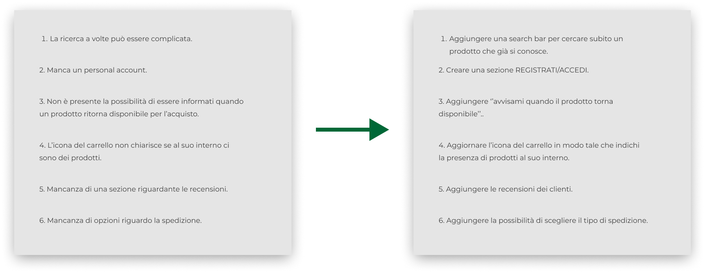
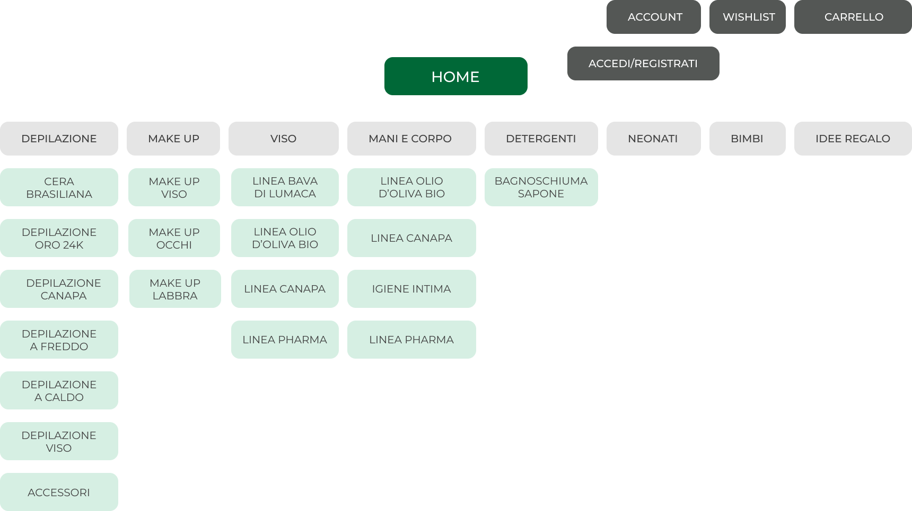
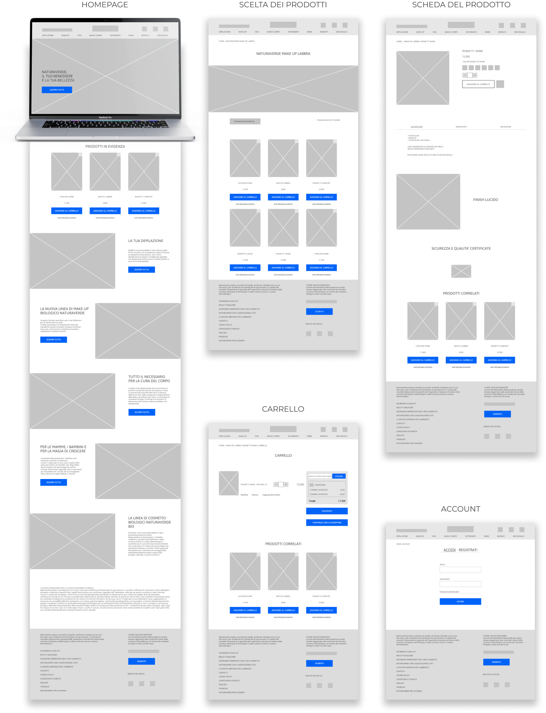
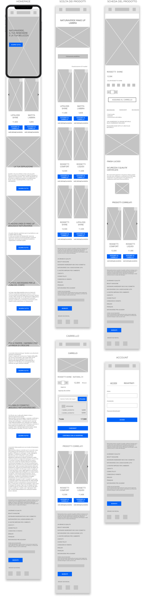
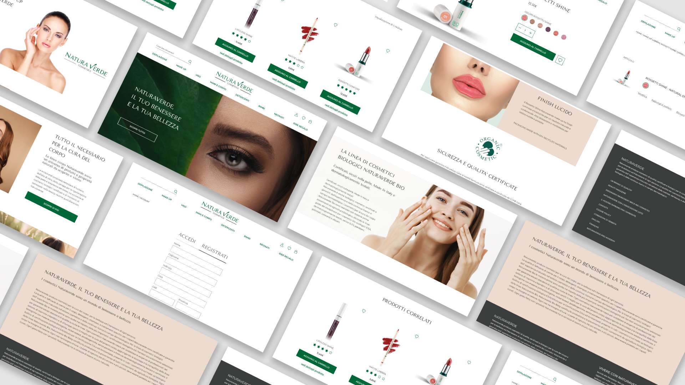
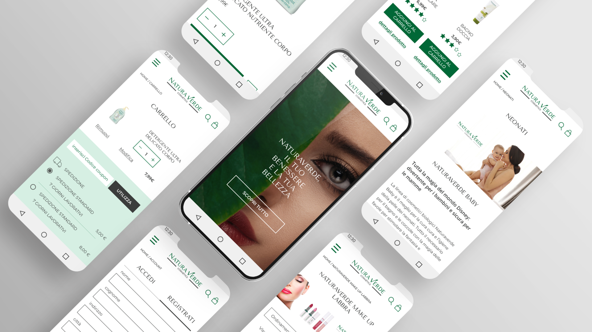
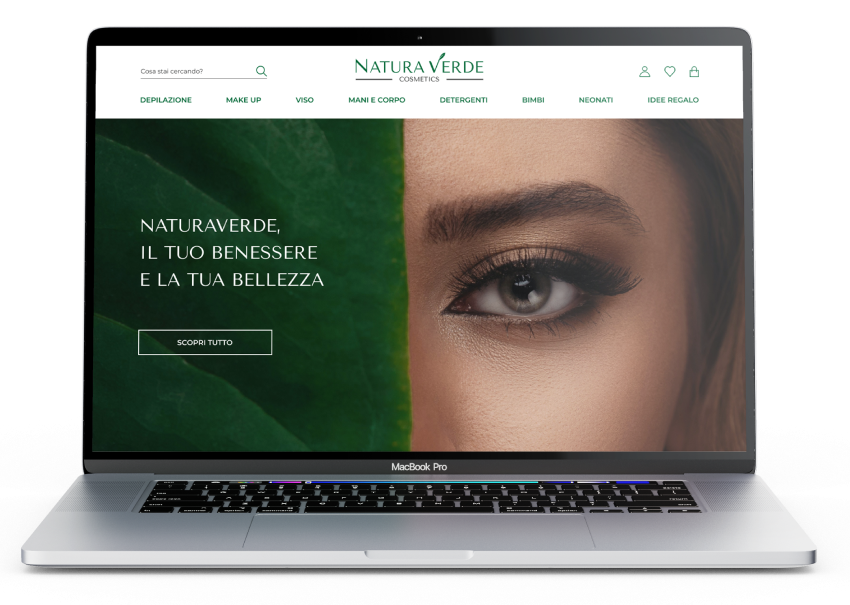
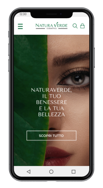

NATURAVERDE è un ecommerce che si occupa della vendita di cosmetici naturali. L'attuale esperienza d’acquisto dei prodotti però si presenta scoraggiante. Gli utenti incontrano difficoltà nella navigazione e nel concludere l’acquisto.
1 - Come posso rendere il brand più riconoscibile e moderno? 2 - Come posso migliorare l’esperienza utente durante la navigazione del sito; 3 - Come posso semplificare l’esperienza d’acquisto, dalla scelta dei prodotti fino al checkout.
Il lavoro che ho svolto è stato quello di effettuare un miglioramento del logo e una riprogettazione del sito sia per la versione desktop che per quella mobile.
L’attuale logo si presenta poco riconoscibile e per questo ho deciso di evidenziare il concetto di natura e l’anima biologica del brand inserendo una piccola foglia posta sulla lettera v. Inoltre per definire in modo significativo l’identità e il posizionamento del brand ho inserito una tagline "COSMETICS".
Ho iniziato ad esaminare il sito attraverso le 10 EURISTICHE di Nielsen, per mappare i suoi punti di forza e di debolezza, ed ho analizzato la struttura del sito attraverso lo studio dell’architettura dell’informazione.
Ho proseguito poi con una ricerca di mercato per comprendere come NATURAVERDE si presenta rispetto ai suoi competitors diretti, ed ho individuato il target, ovvero donne di età compresa tra i 18 anni ed i 55 anni, e qualche uomo.
Infine ho effettuato un SONDAGGIO per capire al meglio le abitudini degli utenti, le necessità e i loro bisogni, ma anche per verificare l’effettiva funzionalità del sito.
Da questa ricerca, ho quindi creato le PERSONAS con i relativi USER JOURNEY per capire come si comportano gli utenti durante i vari step di interazione con il sito.


Dagli user journey sono emerse alcune criticità che portano verso nuove opportunità di miglioramento.

Considerando la ricerca effettuata fin qui, ho iniziato a ideare cosa volevo che il sito migliorasse. Per prima cosa ho effettuato una review dell’Architettura dell’Informazione, aggiungendo nuove funzionalità.

I wireframe poi sono stati utili durante questa fase del processo perché mi hanno aiutato a capire come riorganizzare la struttura generale e i gli schemi di navigazione del sito.


Una volta passata dalla fase di ideazione a quella di prototipazione, ho costruito un design system per assicurarmi che tutti gli elementi di progettazione fossero coerenti durante tutto il processo.


Ho creato un prototipo cliccabile per testare le mie idee e convalidare la riprogettazione del sito sia per la versione desktop che per quella mobile.
Link ai prototipi desktop e mobile.


Ho avuto l’opportunità di incontrare e sottoporre il prototipo interattivo ad un gruppo di 10 persone che rappresentasse il mio target. La sessione di test mi ha permesso di ricevere molti feedback e approfondimenti preziosi. Nel complesso tutti i tester hanno portato a termine le task, anche se hanno avuto comportamenti differenti durante l’interazione con il sito.
Grazie a tutti i dati emersi in fase di test è stato possibile stabilire che nel complesso le modifiche che ho apportato al sito lo hanno reso più intuitivo e con funzionalità più semplici.